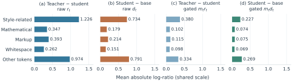
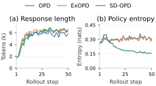

01 / MEASURE
Use the student’s own delta
Score student-generated responses with the current student and its frozen base. Center their log-probability differences to obtain student-derived update coefficients, AS.
SD-OPD · On-Policy Distillation
On-policy distillation (OPD) improves language-model reasoning through dense teacher feedback on student-generated responses. We first observe an amplitude disparity in this feedback: on math reasoning responses, style-related positions exhibit 3.5 times the mean absolute teacher–student log-probability difference of mathematical positions. Scaling OPD updates by these discrepancies thus directs much of the update strength toward matching the teacher’s expression. We instead take the student’s own pretrained base as a reference: the student–base difference records the token preferences acquired during post-training and provides supervision that does not depend on the student’s distance from the teacher.
Building on this reference, we propose Student-Delta On-Policy Distillation (SD-OPD), which uses centered student–base differences as update coefficients, keeps each coefficient only when its sign agrees with centered teacher–student feedback, and recomputes the student signal every training round. Across 5 teacher–student configurations with Qwen3 students of 1.7B to 8B parameters, SD-OPD improves six-task mathematics average pass@1 (avg@16) over OPD by 7.76 to 10.37 percentage points.
The observation
Teacher–student disagreement reflects differences in expression as well as reasoning. On the same math responses, its mean absolute magnitude is 3.5× larger at style-related positions than at mathematical positions.

The method
The student’s difference from its own pretrained base records the token preferences acquired during post-training. SD-OPD uses that difference as an evolving source of supervision.
Score student-generated responses with the current student and its frozen base. Center their log-probability differences to obtain student-derived update coefficients, AS.
Center the teacher–student feedback, AT. Keep a student coefficient only when the two signs agree. Positive agreement reinforces a token; negative agreement suppresses it.
Use the selected coefficients in clipped policy updates, then refresh the student signal for the next rollout round. The teacher and pretrained base remain frozen throughout.
Opposite signs or exact zeros give no update. Training approximates centering with the student’s top 1,024 candidates.
Main results
SD-OPD achieves the highest six-task student average in all five configurations, with matched rollout and response budgets. Students range from 1.7B to 8B parameters.
Qwen3-4B →Qwen3-1.7B
+9.77 pp vs. OPD
Qwen3-30B-A3B →Qwen3-1.7B
+9.99 pp vs. OPD
MiMo-7B →Qwen3-1.7B
+8.64 pp vs. OPD
Qwen3-30B-A3B →Qwen3-4B
+7.76 pp vs. OPD
Qwen3-30B-A3B →Qwen3-8B
+10.37 pp vs. OPD
Six-task average pass@1 (%), shared 0–100 scale. Gains are SD-OPD − OPD in percentage points.
Qwen teachers use Instruct-2507 checkpoints; MiMo uses MiMo-7B-RL-0530.
| Method | AIME24 | AIME25 | AIME26 | HMMT25 | AMC23 | MATH500 | Average |
|---|---|---|---|---|---|---|---|
| Initial student | 13.12 | 8.54 | 7.71 | 6.67 | 44.69 | 69.40 | 25.02 |
| OPD | 32.08 | 26.25 | 24.38 | 16.88 | 73.75 | 83.90 | 42.87 |
| ExOPD | 40.42 | 28.12 | 28.75 | 20.00 | 79.06 | 86.11 | 47.08 |
| SD-OPD | 45.42 | 33.33 | 40.62 | 21.04 | 86.72 | 88.72 | 52.64 |
| Δ vs. OPD | +13.33 | +7.08 | +16.25 | +4.17 | +12.97 | +4.83 | +9.77 |
| Teacher | 58.75 | 44.38 | 53.12 | 29.17 | 93.44 | 93.33 | 62.03 |
| Method | AIME24 | AIME25 | AIME26 | HMMT25 | AMC23 | MATH500 | Average |
|---|---|---|---|---|---|---|---|
| Initial student | 13.12 | 8.54 | 7.71 | 6.67 | 44.69 | 69.40 | 25.02 |
| OPD | 31.87 | 27.08 | 26.67 | 16.67 | 72.03 | 84.60 | 43.15 |
| ExOPD | 35.00 | 29.38 | 30.83 | 17.71 | 71.09 | 85.84 | 44.97 |
| SD-OPD | 44.79 | 37.08 | 40.21 | 18.33 | 88.91 | 89.53 | 53.14 |
| Δ vs. OPD | +12.92 | +10.00 | +13.54 | +1.67 | +16.88 | +4.93 | +9.99 |
| Teacher | 77.08 | 60.00 | 72.29 | 42.50 | 95.31 | 95.74 | 73.82 |
| Method | AIME24 | AIME25 | AIME26 | HMMT25 | AMC23 | MATH500 | Average |
|---|---|---|---|---|---|---|---|
| Initial student | 13.12 | 8.54 | 7.71 | 6.67 | 44.69 | 69.40 | 25.02 |
| OPD | 43.54 | 36.67 | 34.58 | 21.25 | 79.84 | 88.01 | 50.65 |
| ExOPD | 35.42 | 30.00 | 27.50 | 20.62 | 67.81 | 85.02 | 44.40 |
| SD-OPD | 54.37 | 43.33 | 45.21 | 31.04 | 90.94 | 90.84 | 59.29 |
| Δ vs. OPD | +10.83 | +6.67 | +10.63 | +9.79 | +11.09 | +2.83 | +8.64 |
| Teacher | 75.21 | 63.12 | 63.75 | 42.92 | 86.56 | 89.61 | 70.20 |
| Method | AIME24 | AIME25 | AIME26 | HMMT25 | AMC23 | MATH500 | Average |
|---|---|---|---|---|---|---|---|
| Initial student | 21.46 | 18.54 | 14.37 | 11.67 | 68.91 | 81.49 | 36.07 |
| OPD | 60.62 | 46.25 | 54.79 | 33.54 | 89.22 | 92.34 | 62.79 |
| ExOPD | 66.67 | 55.21 | 60.00 | 35.42 | 92.03 | 93.27 | 67.10 |
| SD-OPD | 69.79 | 62.29 | 60.62 | 42.08 | 95.78 | 92.74 | 70.55 |
| Δ vs. OPD | +9.17 | +16.04 | +5.83 | +8.54 | +6.56 | +0.40 | +7.76 |
| Teacher | 77.08 | 60.00 | 72.29 | 42.50 | 95.31 | 95.74 | 73.82 |
| Method | AIME24 | AIME25 | AIME26 | HMMT25 | AMC23 | MATH500 | Average |
|---|---|---|---|---|---|---|---|
| Initial student | 26.46 | 20.42 | 15.42 | 10.83 | 66.72 | 82.35 | 37.03 |
| OPD | 67.71 | 54.37 | 55.00 | 32.71 | 91.56 | 93.11 | 65.74 |
| ExOPD | 68.96 | 51.25 | 61.46 | 32.92 | 93.91 | 93.75 | 67.04 |
| SD-OPD | 80.42 | 68.96 | 67.50 | 48.75 | 97.34 | 93.70 | 76.11 |
| Δ vs. OPD | +12.71 | +14.58 | +12.50 | +16.04 | +5.78 | +0.59 | +10.37 |
| Teacher | 77.08 | 60.00 | 72.29 | 42.50 | 95.31 | 95.74 | 73.82 |
Table 1 from the paper. Pass@1 (%) averaged over 16 sampled responses per problem (avg@16), evaluated in non-thinking mode. Bold marks the highest student score per column. Teacher scores are references. Averages and gains use unrounded scores, so they may differ slightly from arithmetic on the displayed values. HMMT25 denotes the February competition.
With Qwen3-30B-A3B-Instruct-2507 as the teacher, the 8B student reaches 76.11% average pass@1, exceeding the teacher’s 73.82% by 2.29 percentage points. It also exceeds this teacher on AIME 2024, AIME 2025, HMMT 2025, and AMC 2023.
A closer look
| Variant | Average pass@1 |
|---|---|
| SD-OPD | 52.64% |
| Frozen student signal | 34.47% |
| Without teacher gate | 0.00% |
Teacher selection is essential in this setting. Removing the sign gate collapses performance to zero on all six tasks. Fixing the student–base source at the initial student also hurts performance, showing the value of refreshing supervision as the student learns.

SD-OPD maintains long responses while concentrating next-token predictions. Over rounds 41–50, mean entropy is 0.158 nats, compared with 0.314 for OPD and 0.308 for ExOPD.
@misc{fang2026reinforcingstudentlearnedteacherguided,
title={Reinforcing What the Student Has Learned:
Teacher-Guided On-Policy Distillation},
author={Bozhen Fang and Linhao Zhong and Xuehao Wang and
Huanyi Zheng and Hao Chen and Chunhua Shen},
year={2026},
eprint={2611.07722},
archivePrefix={arXiv},
primaryClass={cs.LG},
url={https://arxiv.org/abs/2611.07722},
}